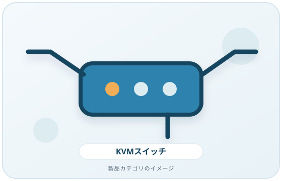
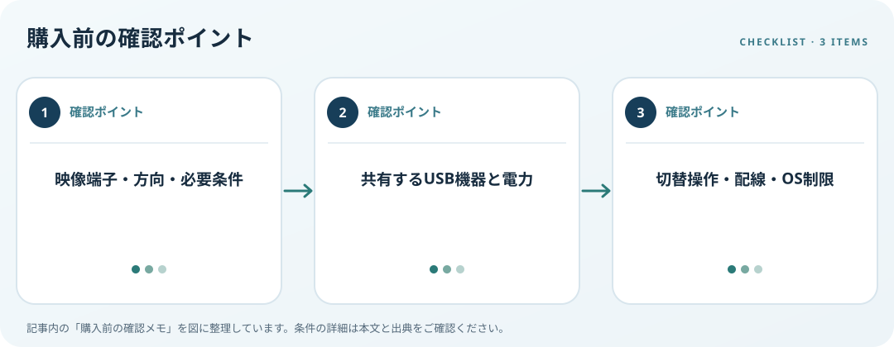

PC、KVM、モニター、入力機器の端子・接続経路・切替条件を図にします。この記事では仕様の確認順を整理します。
画像・ボタンはAmazonアソシエイトリンクです。適格購入により紹介料を得る場合があります。

Amazon.co.jpで「KVMスイッチ モニター 2台」を探す ↗

画面の接続経路を描く
PC、KVM、モニターの端子と信号の方向を一つずつ書き出します。映像端子、変換の有無、画面台数、解像度や更新頻度など必要条件を各機器の仕様で照合します。KVMの端子数だけでシステム全体の表示性能や同時画面数を推定しないでください。
USB共有機器を決める
キーボードとマウス以外にカメラや音声機器を切り替えるか決めます。製品ごとに対応機器や電源条件が異なるため、メーカーの互換情報を確認します。USB-Cの場合、端子形状が合うことと映像機能を含め必要な機能に対応することは別の確認です。
操作と設置を確認
ボタンやホットキーが使いやすい場所に置けるか、ケーブルが机とPCの距離に足りるか測ります。Windowsでは接続後に画面識別や並べ替えができますが、認識する画面数はPCと接続機器の仕様にもよります。会社端末のソフト導入制限も先に確認しましょう。
購入前の確認メモ
- 映像端子・方向・必要条件
- 共有するUSB機器と電力
- 切替操作・配線・OS制限
この記事は出典の公開情報を購入前の確認項目に整理したもので、特定商品の使用・実測・レビュー・ランキング・価格・在庫の調査は行っていません。購入時には利用機器メーカーの最新仕様をご確認ください。
出典
- Multiple monitors — Microsoft（確認日: 2026-10-10）
- Cables and Connectors — USB-IF（確認日: 2026-10-10）
- Monitors — OSHA（確認日: 2026-10-10）